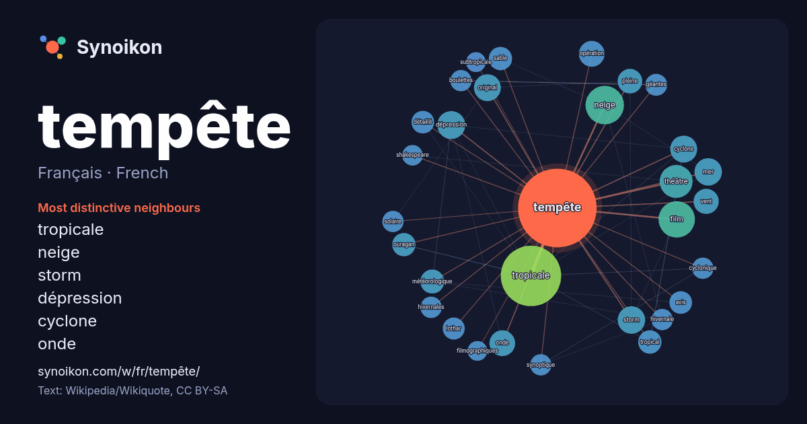

Français · French · word of the day list
tempête
“storm” · The words found around it in 1286 instances from French Wikipedia, Wikiquote.

Most distinctive neighbours
- tropicale 115×
- neige 45×
- storm 25×
- dépression 24×
- cyclone 24×
- onde 21×
- original 21×
- théâtre 20×
- ouragan 19×
- pleine 18×
- tropical 18×
- détaillé 17×
- vent 17×
- lothar 17×
- sable 16×
- avis 16×
- météorologique 16×
- géantes 16×
- synoptique 16×
- boulettes 16×
× = how many times more often than in general French Wikipedia text.
Most frequent neighbours
- tropicale 121
- neige 49
- film 44
- théâtre 36
- nom 32
- dépression 26
- mer 25
- storm 25
- cyclone 24
- original 24
- saison 23
- onde 22
- opération 22
- décembre 21
- vent 21
- pleine 20
- météorologique 19
- février 18
- ouragan 18
- sable 18
In context
- Pour les articles homonymes, voir Tempête (homonymie). Tempête Une tempête est un phénomène météorologique violent à large échelle dite synoptique, avec Wikipedia snippets · Tempête
- Pour les articles homonymes, voir La Tempête. La Tempête (The Tempest) est une pièce de théâtre en cinq actes écrite par William Shakespeare vers 1610-1611 Wikipedia snippets · La Tempête (Shakespeare)
- voir Tempête (homonymie). En pleine tempête Logo original du film Pour plus de détails, voir Fiche technique et Distribution. En pleine tempête ou La Wikipedia snippets · En pleine tempête
- homonymes, voir Ciarán. Tempête Ciarán La tempête Ciarán est une dépression à développement explosif de la saison des tempêtes hivernales en Europe de Wikipedia snippets · Tempête Ciarán
- confondu avec Cyclone tropical Alex. Tempête Alex La tempête Alex est la première tempête de la saison des tempêtes hivernales en Europe de 2020-2021. Après Wikipedia snippets · Tempête Alex
- « Des vols Air France annulés à cause de la tempêt », sur Le Monde (consulté le 28 février 2010) Tempête : électricité, retour à la normale mercredi pour Wikipedia snippets · Tempête Xynthia
- voir Tempête (homonymie). Tempête Lothar La trajectoire de la tempête. La tempête Lothar, nom donné par les météorologistes européens, est une tempête synoptique Wikipedia snippets · Tempête Lothar
- homonymes, voir Tempête du siècle. Tempêtes de fin décembre 1999 en Europe Image satellite infra-rouge montrant la position des tempêtes Lothar (L sur l'Allemagne) Wikipedia snippets · Tempêtes de fin décembre 1999 en Europe
More French words
- art
- automne
- carte
- chanson
- chat
- chemin
- cheval
- chien
- climat
- cloche
- cœur
- dieu
- désert
- eau
- famille
- forêt
- histoire
- hiver
- horloge
- jardin
- langue
- miel
- miroir
- monnaie
- montagne
- mort
- mère
- nature
- nourriture
- ombre
- pain
- pluie
- pont
- pouvoir
- printemps
- santé
- science
- sel
- silence
- temps
- thé
- train
- travail
- trésor
- vie
- ville
- vérité
- étoile
- île
Precomputed on 2026-10-09 with default settings (±5 words, medium corpus). The interactive map can refresh it with live data.